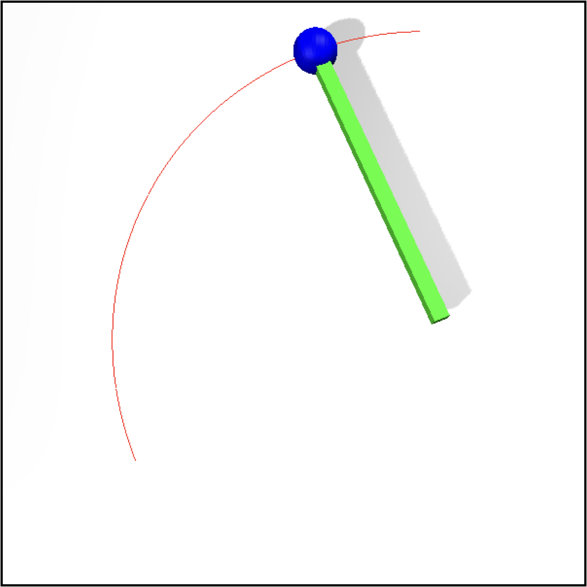
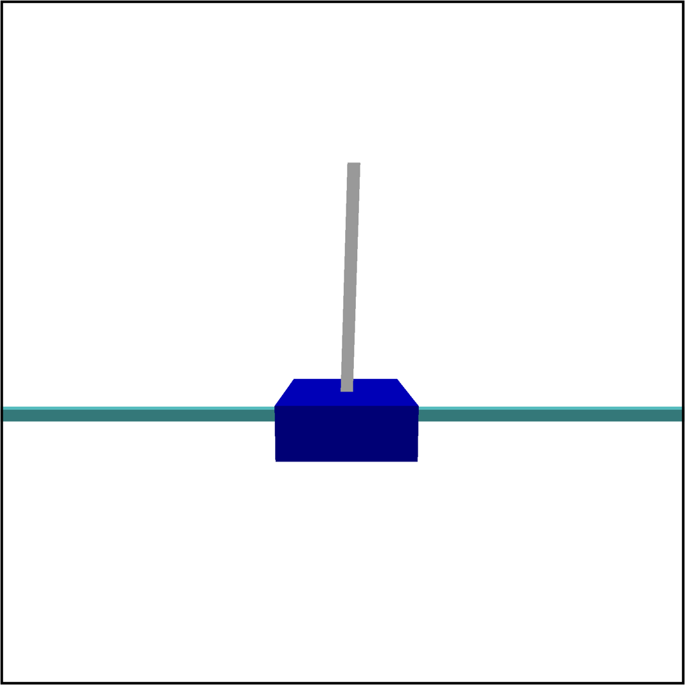
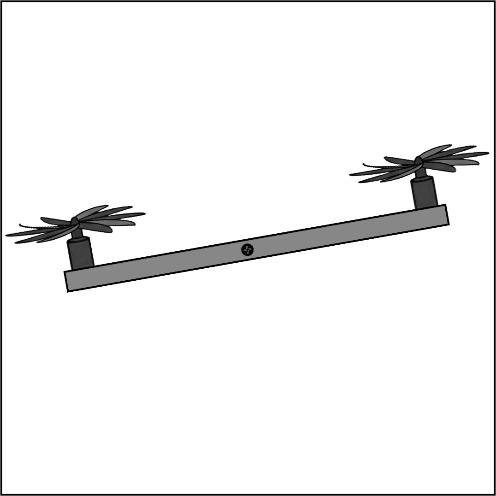
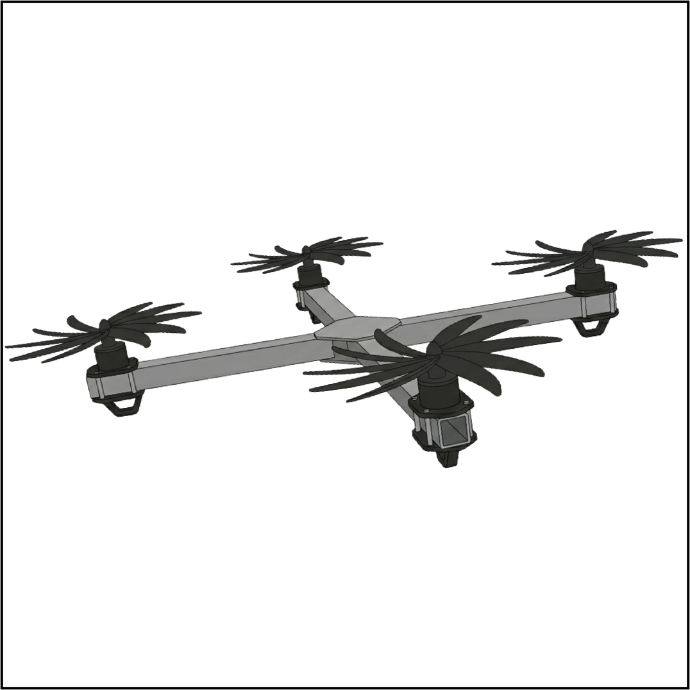
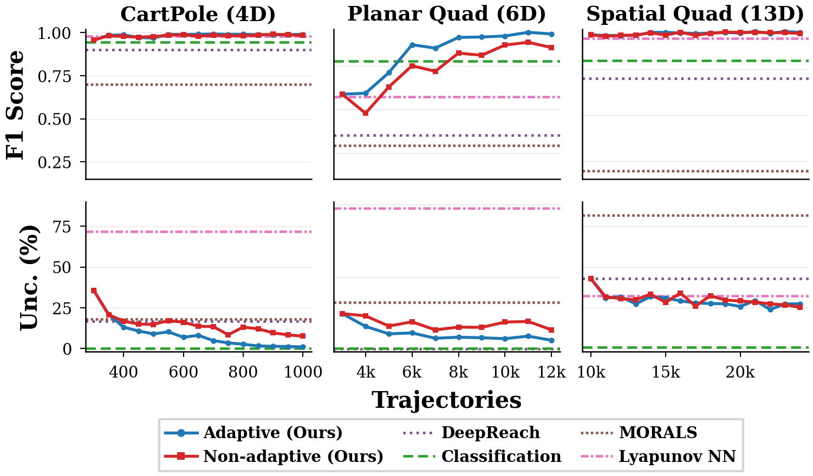

We evaluate on four dynamical systems of increasing dimensionality, from a 2D pendulum to a 13D spatial quadrotor.

Verification of robot controllers is important for ensuring safe and reliable robot operation. It can involve the characterization of a controller's Region of Attraction (RoA), i.e., the initial states that lead to a successful outcome. This is challenging, however, for black-box, learned controllers where analytical models are unavailable. In such scenarios, verification is conducted using only trajectory data, making data efficiency critical as each data point represents a costly physical experiment. To address this, this paper presents a framework that integrates three components: (1) a Conditional Flow Matching (CFM) model that learns the distribution of final states from initial conditions, capturing multi-modal outcome distributions that naturally express uncertainty near the boundary between success and failure regions; (2) a probabilistic classification mechanism that interprets the learned distribution via optimized decision thresholds to categorize states into the RoA, the failure region, or an uncertain region where the model cannot commit to an outcome; and (3) an adaptive sampling strategy that concentrates trajectory collection on the uncertain region to reduce it with fewer rollouts than uniform sampling. The resulting predictions are certified via conformal inference to provide finite-sample coverage guarantees. Experiments on benchmark systems ranging from a 2D pendulum to a 13D quadrotor demonstrate that the proposed framework achieves high verification accuracy with low uncertainty compared to existing methods, and that adaptive sampling further improves data efficiency over the non-adaptive variant.
Our framework estimates the Region of Attraction (RoA) of a black-box controller through three integrated components. Each initial state is classified into one of three labels: <Suc> (the state lies within the RoA and the controller succeeds), <Fail> (the state lies outside the RoA and the controller fails), or <Unc> (the model cannot confidently commit to an outcome).
<Suc> and <Fail> regions.<Suc>, <Fail>, or <Unc>, with thresholds optimized to balance accuracy and the size of the <Unc> region.<Unc> region guides data collection, concentrating costly trajectory rollouts on boundary states where the classifier cannot commit, progressively refining the RoA characterization.Finally, a conformal inference layer certifies all predictions with finite-sample coverage guarantees.
We evaluate on four dynamical systems of increasing dimensionality, from a 2D pendulum to a 13D spatial quadrotor.

Pendulum (2D)
State: $(\theta, \dot{\theta})$
LQR control

Cartpole (4D)
State: $(q, \dot{q}, \theta, \dot{\theta})$
LQR control

Planar Quadrotor (6D)
State: $(x, \dot{x}, y, \dot{y}, \theta, \dot{\theta})$
Learned RL policy

Spatial Quadrotor (13D)
3D position, orientation,
and velocities. LQR control
For each query state, the CFM model generates multiple predicted final states via Monte Carlo sampling. Each sample is evaluated against user-specified success/failure criteria to estimate a success probability. A dual-threshold decision rule then classifies the state: high success probability yields a <Suc> prediction, low probability yields <Fail>, and intermediate values produce an <Unc> label—indicating the model cannot confidently commit to an outcome. The decision thresholds are jointly optimized to minimize both classification error and the size of the <Unc> region.

Most of the state space is homogeneous—clearly within the <Suc> or <Fail> region. The critical boundary between them occupies a thin manifold that is underrepresented under uniform sampling. Our DIRECT acquisition algorithm identifies states classified as <Unc> and preferentially collects new trajectory data from this region. Over multiple iterations, the framework progressively refines the RoA boundary characterization, achieving approximately 1.5× data savings compared to uniform sampling.

A split conformal prediction layer certifies the framework's outputs with provable, finite-sample coverage guarantees. Using a held-out calibration set, nonconformity scores are computed to measure how consistent the model's probability estimates are with true labels. For a user-specified confidence level 1−α, the conformal procedure produces prediction sets guaranteed to contain the true outcome with probability at least 1−α. Singleton prediction sets ({<Suc>} or {<Fail>}) indicate high-confidence classifications, while non-singleton sets containing <Unc> serve as certificates of abstention. Empirically, coverage exceeds 0.98 across all four benchmark systems at α = 0.1, with nearly all predictions being confident singletons.
Our adaptive method consistently achieves the highest F1 scores (0.933–0.990) with the smallest uncertain regions (1.0%–6.0%) across all four benchmark systems, outperforming six baselines spanning value-function, topological, and direct-prediction approaches. Adaptive sampling achieves approximately 1.5× data savings over the non-adaptive variant, reaching equivalent accuracy with significantly fewer trajectory rollouts.

F1 score (top) and uncertain region size (bottom) as a function of trajectory budget across CartPole (4D), Planar Quadrotor (6D), and Spatial Quadrotor (13D). The adaptive variant (red) consistently outperforms the non-adaptive variant (blue) and all baselines.